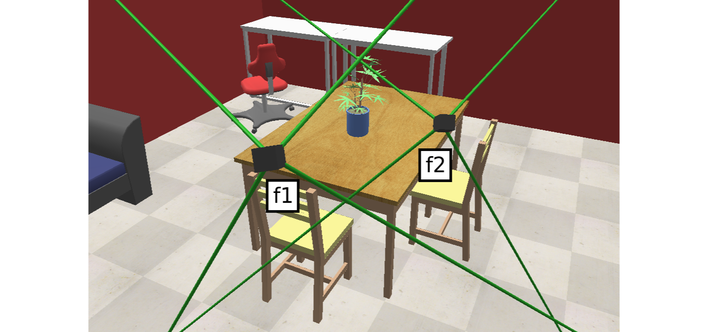

3D Vision functions with end-to-end support for machine learning developers, written in Ivy.
Contents¶
Overview¶
What is Ivy Vision?
Ivy vision focuses predominantly on 3D vision, with functions for camera geometry, image projections, co-ordinate frame transformations, forward warping, inverse warping, optical flow, depth triangulation, voxel grids, point clouds, signed distance functions, and others.
The library is built on top of the Ivy machine learning framework. This means all functions simultaneously support: Jax, Tensorflow, PyTorch, MXNet, and Numpy.
Ivy Libraries
There are a host of derived libraries written in Ivy, in the areas of mechanics, 3D vision, robotics, gym environments, neural memory, pre-trained models + implementations, and builder tools with trainers, data loaders and more. Click on the icons below to learn more!


Quick Start
Ivy vision can be installed like so: pip install ivy-vision
To quickly see the different aspects of the library, we suggest you check out the demos!
we suggest you start by running the script run_through.py,
and read the “Run Through” section below which explains this script.
For more interactive demos, we suggest you run either
coords_to_voxel_grid.py or render_image.py in the interactive demos folder.
Run Through¶
We run through some of the different parts of the library via a simple ongoing example script.
The full script is available in the demos folder, as file run_through.py.
First, we select a random backend framework to use for the examples, from the options
ivy.jax, ivy.tensorflow, ivy.torch, ivy.mxnet or ivy.numpy,
and use this to set the ivy backend framework.
import ivy
from ivy_demo_utils.framework_utils import choose_random_framework
ivy.set_framework(choose_random_framework())
Camera Geometry
To get to grips with some of the basics, we next show how to construct ivy containers which represent camera geometry. The camera intrinsic matrix, extrinsic matrix, full matrix, and all of their inverses are central to most of the functions in this library.
All of these matrices are contained within the Ivy camera geometry class.
# intrinsics
# common intrinsic params
img_dims = [512, 512]
pp_offsets = ivy.array([dim / 2 - 0.5 for dim in img_dims], 'float32')
cam_persp_angles = ivy.array([60 * np.pi / 180] * 2, 'float32')
# ivy cam intrinsics container
intrinsics = ivy_vision.persp_angles_and_pp_offsets_to_intrinsics_object(
cam_persp_angles, pp_offsets, img_dims)
# extrinsics
# 3 x 4
cam1_inv_ext_mat = ivy.array(np.load(data_dir + '/cam1_inv_ext_mat.npy'), 'float32')
cam2_inv_ext_mat = ivy.array(np.load(data_dir + '/cam2_inv_ext_mat.npy'), 'float32')
# full geometry
# ivy cam geometry container
cam1_geom = ivy_vision.inv_ext_mat_and_intrinsics_to_cam_geometry_object(
cam1_inv_ext_mat, intrinsics)
cam2_geom = ivy_vision.inv_ext_mat_and_intrinsics_to_cam_geometry_object(
cam2_inv_ext_mat, intrinsics)
cam_geoms = [cam1_geom, cam2_geom]
The geometries used in this quick start demo are based upon the scene presented below.
{kind=link}
The code sample below demonstrates all of the attributes contained within the Ivy camera geometry class.
for cam_geom in cam_geoms:
assert cam_geom.intrinsics.focal_lengths.shape == (2,)
assert cam_geom.intrinsics.persp_angles.shape == (2,)
assert cam_geom.intrinsics.pp_offsets.shape == (2,)
assert cam_geom.intrinsics.calib_mats.shape == (3, 3)
assert cam_geom.intrinsics.inv_calib_mats.shape == (3, 3)
assert cam_geom.extrinsics.cam_centers.shape == (3, 1)
assert cam_geom.extrinsics.Rs.shape == (3, 3)
assert cam_geom.extrinsics.inv_Rs.shape == (3, 3)
assert cam_geom.extrinsics.ext_mats_homo.shape == (4, 4)
assert cam_geom.extrinsics.inv_ext_mats_homo.shape == (4, 4)
assert cam_geom.full_mats_homo.shape == (4, 4)
assert cam_geom.inv_full_mats_homo.shape == (4, 4)
Load Images
We next load the color and depth images corresponding to the two camera frames. We also construct the depth-scaled homogeneous pixel co-ordinates for each image, which is a central representation for the ivy_vision functions. This representation simplifies projections between frames.
# load images
# h x w x 3
color1 = ivy.array(cv2.imread(data_dir + '/rgb.png').astype(np.float32) / 255)
color2 = ivy.array(cv2.imread(data_dir + '/rgb.png').astype(np.float32) / 255)
# h x w x 1
depth1 = ivy.array(np.reshape(np.frombuffer(cv2.imread(
data_dir + '/depth.png', -1).tobytes(), np.float32), img_dims + [1]))
depth2 = ivy.array(np.reshape(np.frombuffer(cv2.imread(
data_dir + '/depth.png', -1).tobytes(), np.float32), img_dims + [1]))
# depth scaled pixel coords
# h x w x 3
u_pix_coords = ivy_vision.create_uniform_pixel_coords_image(img_dims)
ds_pixel_coords1 = u_pix_coords * depth1
ds_pixel_coords2 = u_pix_coords * depth2
The rgb and depth images are presented below.

Optical Flow and Depth Triangulation
Now that we have two cameras, their geometries, and their images fully defined, we can start to apply some of the more interesting vision functions. We start with some optical flow and depth triangulation functions.
# required mat formats
cam1to2_full_mat_homo = ivy.matmul(cam2_geom.full_mats_homo, cam1_geom.inv_full_mats_homo)
cam1to2_full_mat = cam1to2_full_mat_homo[..., 0:3, :]
full_mats_homo = ivy.concatenate((ivy.expand_dims(cam1_geom.full_mats_homo, 0),
ivy.expand_dims(cam2_geom.full_mats_homo, 0)), 0)
full_mats = full_mats_homo[..., 0:3, :]
# flow
flow1to2 = ivy_vision.flow_from_depth_and_cam_mats(ds_pixel_coords1, cam1to2_full_mat)
# depth again
depth1_from_flow = ivy_vision.depth_from_flow_and_cam_mats(flow1to2, full_mats)
Visualizations of these images are given below.

Inverse and Forward Warping
Most of the vision functions, including the flow and depth functions above, make use of image projections, whereby an image of depth-scaled homogeneous pixel-coordinates is transformed into cartesian co-ordinates relative to the acquiring camera, the world, another camera, or transformed directly to pixel co-ordinates in another camera frame. These projections also allow warping of the color values from one camera to another.
For inverse warping, we assume depth to be known for the target frame. We can then determine the pixel projections into the source frame, and bilinearly interpolate these color values at the pixel projections, to infer the color image in the target frame.
Treating frame 1 as our target frame, we can use the previously calculated optical flow from frame 1 to 2, in order to inverse warp the color data from frame 2 to frame 1, as shown below.
# inverse warp rendering
warp = u_pix_coords[..., 0:2] + flow1to2
color2_warp_to_f1 = ivy.bilinear_resample(color2, warp)
# projected depth scaled pixel coords 2
ds_pixel_coords1_wrt_f2 = ivy_vision.ds_pixel_to_ds_pixel_coords(ds_pixel_coords1, cam1to2_full_mat)
# projected depth 2
depth1_wrt_f2 = ds_pixel_coords1_wrt_f2[..., -1:]
# inverse warp depth
depth2_warp_to_f1 = ivy.bilinear_resample(depth2, warp)
# depth validity
depth_validity = ivy.abs(depth1_wrt_f2 - depth2_warp_to_f1) < 0.01
# inverse warp rendering with mask
color2_warp_to_f1_masked = ivy.where(depth_validity, color2_warp_to_f1, ivy.zeros_like(color2_warp_to_f1))
Again, visualizations of these images are given below. The images represent intermediate steps for the inverse warping of color from frame 2 to frame 1, which is shown in the bottom right corner.

For forward warping, we instead assume depth to be known in the source frame. A common approach is to construct a mesh, and then perform rasterization of the mesh.
The ivy method ivy_vision.render_pixel_coords instead takes a simpler approach,
by determining the pixel projections into the target frame,
quantizing these to integer pixel co-ordinates,
and scattering the corresponding color values directly into these integer pixel co-ordinates.
This process in general leads to holes and duplicates in the resultant image, but when compared to inverse warping, it has the beneft that the target frame does not need to correspond to a real camera with known depth. Only the target camera geometry is required, which can be for any hypothetical camera.
We now consider the case of forward warping the color data from camera frame 2 to camera frame 1, and again render the new color image in target frame 1.
# forward warp rendering
ds_pixel_coords1_proj = ivy_vision.ds_pixel_to_ds_pixel_coords(
ds_pixel_coords2, ivy.inv(cam1to2_full_mat_homo)[..., 0:3, :])
depth1_proj = ds_pixel_coords1_proj[..., -1:]
ds_pixel_coords1_proj = ds_pixel_coords1_proj[..., 0:2] / depth1_proj
features_to_render = ivy.concatenate((depth1_proj, color2), -1)
# without depth buffer
f1_forward_warp_no_db, _, _ = ivy_vision.quantize_to_image(
ivy.reshape(ds_pixel_coords1_proj, (-1, 2)), img_dims, ivy.reshape(features_to_render, (-1, 4)),
ivy.zeros_like(features_to_render), with_db=False)
# with depth buffer
f1_forward_warp_w_db, _, _ = ivy_vision.quantize_to_image(
ivy.reshape(ds_pixel_coords1_proj, (-1, 2)), img_dims, ivy.reshape(features_to_render, (-1, 4)),
ivy.zeros_like(features_to_render), with_db=False if ivy.get_framework() == 'mxnet' else True)
Again, visualizations of these images are given below. The images show the forward warping of both depth and color from frame 2 to frame 1, which are shown with and without depth buffers in the right-hand and central columns respectively.

Interactive Demos¶
In addition to the examples above, we provide two further demo scripts, which are more visual and interactive, and are each built around a particular function.
Rather than presenting the code here, we show visualizations of the demos. The scripts for these demos can be found in the interactive demos folder.
Neural Rendering
The first demo uses method ivy_vision.render_implicit_features_and_depth
to train a Neural Radiance Field (NeRF) model to encode a lego digger. The NeRF model can then be queried at new camera
poses to render new images from poses unseen during training.

Co-ordinates to Voxel Grid
The second demo captures depth and color images from a set of cameras,
converts the depth to world-centric co-ordinartes,
and uses the method ivy_vision.coords_to_voxel_grid to
voxelize the depth and color values into a grid, as shown below:

Point Rendering
The final demo again captures depth and color images from a set of cameras,
but this time uses the method ivy_vision.quantize_to_image to
dynamically forward warp and point render the images into a new target frame, as shown below.
The acquiring cameras all remain static, while the target frame for point rendering moves freely.

Get Involed¶
We hope the functions in this library are useful to a wide range of machine learning developers. However, there are many more areas of 3D vision which could be covered by this library.
If there are any particular vision functions you feel are missing, and your needs are not met by the functions currently on offer, then we are very happy to accept pull requests!
We look forward to working with the community on expanding and improving the Ivy vision library.
Citation¶
@article{lenton2021ivy,
title={Ivy: Unified Machine Learning for Inter-Framework Portability},
author={Lenton, Daniel and Pardo, Fabio and Falck, Fabian and James, Stephen and Clark, Ronald},
journal={arXiv preprint arXiv:2102.02886},
year={2021}
}
Documentation Tree¶
Modules
- Containers
- Implicit
- Mesh
- Optical flow
- Padding
- Projective geometry
- Quantization
- Sdf
- Single view geometry
- create_uniform_pixel_coords_image
- persp_angles_to_focal_lengths
- focal_lengths_to_persp_angles
- focal_lengths_and_pp_offsets_to_calib_mat
- rot_mat_and_cam_center_to_ext_mat
- depth_to_ds_pixel_coords
- depth_to_radial_depth
- ds_pixel_coords_to_radial_depth
- cam_to_ds_pixel_coords
- cam_coords_to_depth
- ds_pixel_to_cam_coords
- depth_to_cam_coords
- world_to_cam_coords
- cam_to_world_coords
- world_to_ds_pixel_coords
- world_coords_to_depth
- ds_pixel_to_world_coords
- depth_to_world_coords
- pixel_coords_to_world_ray_vectors
- sphere_coords_to_world_ray_vectors
- bilinearly_interpolate_image
- inv_ext_mat_to_camera_center
- calib_and_ext_to_full_mat
- cam_to_sphere_coords
- ds_pixel_to_sphere_coords
- angular_pixel_to_sphere_coords
- sphere_to_cam_coords
- sphere_to_ds_pixel_coords
- sphere_to_angular_pixel_coords
- persp_angles_and_pp_offsets_to_intrinsics_object
- focal_lengths_and_pp_offsets_to_intrinsics_object
- calib_mat_to_intrinsics_object
- ext_mat_and_intrinsics_to_cam_geometry_object
- inv_ext_mat_and_intrinsics_to_cam_geometry_object
- Smoothing
- Two view geometry
- Voxel grids